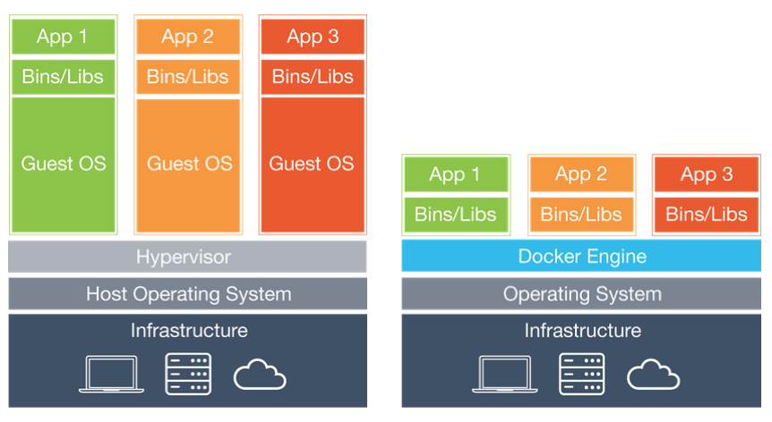

92.Docker在项目中的应用
Docker在项目中的应用
Docker简介
软件开发中最为麻烦的事情可能就是配置环境了。由于用户使用的操作系统具有多样性，即便使用跨平台的开发语言（如Java和Python）都不能保证代码能够在各种平台下都可以正常的运转，而且可能在不同的环境下我们的软件需要依赖的其他软件包也是不一样的。
那么问题来了，我们安装软件的时候可不可以把软件运行的环境一并安装？我们是不是可以把原始环境一模一样地复制过来呢？
虚拟机（virtual machine）就是带环境安装的一种解决方案，它可以在一种操作系统里面运行另一种操作系统，比如在Windows系统里面运行Linux系统，在macOS上运行Windows，而应用程序对此毫无感知。使用过虚拟机的人都知道，虚拟机用起来跟真实系统一模一样，而对于虚拟机的宿主系统来说，虚拟机就是一个普通文件，不需要了就删掉，对宿主系统或者其他的程序并没有影响。但是虚拟机通常会占用较多的系统资源，启动和关闭也非常的缓慢，总之用户体验没有想象中的那么好。
Docker属于对Linux容器技术的一种封装（利用了Linux的namespace和cgroup技术），它提供了简单易用的容器使用接口，是目前最流行的 Linux 容器解决方案。Docker将应用程序与该程序的依赖打包在一个文件里面，运行这个文件，就会生成一个虚拟容器。程序在这个虚拟容器里运行，就好像在真实的物理机上运行一样。有了Docker就再也不用担心环境问题了。

目前，Docker主要用于几下几个方面：
- 提供一次性的环境。
- 提供弹性的云服务（利用Docker很容易实现扩容和收缩）。
- 实践微服务架构（隔离真实环境在容器中运行多个服务）。
安装Docker
下面的讲解以CentOS为例，使用Ubuntu、macOS或Windows的用户可以通过点击链接了解这些平台下如何安装和使用Docker。
- 确定操作系统内核版本（CentOS 7要求64位，内核版本3.10+；CentOS 6要求64位，内核版本2.6+）。
- 在CentOS下使用yum安装Docker并启动。
- 检视Docker的信息和版本。
- 运行Hello-World项目来测试Docker。第一次运行时由于本地没有hello-world的镜像因此需要联网进行下载。
也可以先用下面的命令下载镜像，然后再来运行。
Shell
docker pull <name>
- 运行镜像文件。
- 查看镜像文件。
- 删除镜像文件。
- 查看正在运行容器。
- 停止运行的容器。
对于那些不会自动终止的容器，就可以用下面的方式来停止。
在Ubuntu（内核版本3.10+）下面安装和启动Docker，可以按照如下的步骤进行。
在有必要的情况下，可以更换Ubuntu软件下载源来提升下载速度，具体的做法请参照https://mirrors.tuna.tsinghua.edu.cn/help/ubuntu/。
安装Docker后，由于直接访问dockerhub下载镜像会非常缓慢，建议更换国内镜像，可以通过修改/etc/docker/daemon.js文件来做到。如果使用云服务器（如：阿里云），通常云服务器提供商会提供默认的镜像服务器，并不需要手动进行指定。
使用Docker
安装Nginx
下面我们就基于Docker来运行一台HTTP服务器，我们选择用Nginx来搭建该服务，因为Nginx是高性能的Web服务器，同时也是做反向代理服务器的上佳选择。要做到这件事情，只需要下面这条命令在Docker中创建一个容器即可。
说明：上面的参数
-d表示容器在后台运行（不产生输出到Shell）并显示容器的ID；-p是用来映射容器的端口到宿主机的端口；--rm表示容器停止后自动删除容器，例如通过docker container stop mynginx以后，容器就没有了；—name后面的mynginx就是自定义容器的名字。在创建容器的过程中，需要用到nginx的镜像文件，镜像文件的下载是自动完成的，如果没有指定版本号，默认是最新版本（latest）。
如果需要将自己的Web项目（页面）部署到Nginx上，可以使用容器拷贝命令将指定路径下所有的文件和文件夹拷贝到容器的指定目录中。
如果不愿意拷贝文件也可以在创建容器时通过数据卷操作--volume将指定的文件夹映射到容器的某个目录中，例如将Web项目的文件夹直接映射到/usr/share/nginx/html目录。
说明：上面创建容器和拷贝文件的命令中，
container是可以省略的，也就是说docker container run和docker run是一样的，而docker container cp和docker cp是一样的。此外，命令中的--volume也可以缩写为-v，就如同-d是--detach的缩写，-p是--publish的缩写。$PWD代表宿主系统当前文件夹，这个用过Linux系统的人相信很容易理解。
要查看运行中的容器，可以使用下面的命令。
要让刚才创建的容器停下来，可以使用下面的命令。
由于在创建容器时使用了--rm选项，容器在停止时会被移除，当我们使用下面的命令查看所有容器时，应该已经看不到刚才的mynginx容器了。
如果在创建容器时没有指定--rm选项，那么也可以使用下面的命令来删除容器。
安装MySQL
我们可以先检查一下服务器上有没有MySQL的镜像文件。
下载MySQL镜像并指定镜像的版本号。
如果需要查看已经下载的镜像文件，可以使用下面的命令。
创建并运行MySQL容器。
注意，上面创建容器时我们又一次使用了数据卷操作，那是因为通常容器是随时创建随时删除的，而数据库中的数据却是需要保留下来的，所以上面的两个数据卷操作一个是映射了MySQL配置文件所在的文件夹，一个是映射了MySQL数据所在的文件夹，这里的数据卷操作非常重要。我们可以将MySQL的配置文件放在$PWD/mysql/conf目录下，配置文件的具体内容如下所示：
如果安装了MySQL 8.x版本（目前的最新版本），在使用客户端工具连接服务器时可能会遇到“error 2059: Authentication plugin 'caching_sha2_password' cannot be loaded”的问题，这是因为MySQL 8.x默认使用了名为“caching_sha2_password”的机制对用户口令进行了更好的保护，但是如果客户端工具不支持新的认证方式，连接就会失败。解决这个问题有两种方式：一是升级客户端工具来支持MySQL 8.x的认证方式；二是进入容器，修改MySQL的用户口令认证方式。下面是具体的步骤，我们先用docker exec命令进入容器的交互式环境，假设运行MySQL 8.x的容器名字叫mysql8x。
进入容器的交互式Shell之后，可以首先利用MySQL的客户端工具连接MySQL服务器。
接下来通过SQL来修改用户口令就可以了。
当然，如果愿意你也可以查看一下用户表检查是否修改成功。
在完成上面的步骤后，现在即便不更新客户端工具也可以连接MySQL 8.x了。